햇소자 사용 설명서
햇빛소득마을 통합 운영 플랫폼 햇소자를 처음 쓰는 분도 따라 할 수 있게 적었습니다. 앞부분은 협동조합회원(마을 조합), 가운데는 연합회원, 뒷부분은 관리자(사교원)용입니다.
최근 바뀐 것 (2026-11-27)
- 첫 화면은 「업무 시작」 — 상담·자료 입력·문서 생성 세 창이 한 화면에 있습니다. → 업무 시작
- 「현황 대시보드」는 볼 항목을 골라 봅니다. 「조합 기본 지표」는 원장에 저장한 조합원 수·설비용량을 먼저 보입니다.
- 조합 원장(우리 조합 현황)은 값을 고친 뒤 「💾 저장」을 눌러야 반영됩니다. 저장하지 않고 떠나면 물어봅니다. → 현황
- 지출결의는 단추 하나 「📥 자료 넣기」 — 영수증 사진·PDF·카드 사용내역을 넣으면 지출결의서를 자동으로 만들고 통장·카드와 대조합니다. → 지출결의
- 회의록 대장에 회의 녹음을 넣으면 회의록 초안을 만듭니다. → 회의록 대장
- 「수익 시뮬레이션·배분 계획」이 한 화면 세 단추로 합쳐졌습니다. → 수익·배분
- 「이용안내」 묶음에 📖 사용 설명서와 🤖 내 AI 연결 안내가 있습니다. 사이드바 맨 위에 💳 이용 서비스·요금, ⚙ 메뉴 정리가 있습니다.
- 통합사이트에서 로그인한 뒤 사이드바의 햇소자 메뉴를 누르면, 둘러보기를 거치지 않고 바로 그 화면으로 갑니다.
- 요금 개편 — 협동조합회원 월 20,000원, 연합회원 단위조합 5·10·20곳 이내 월 45,000·90,000·135,000원, 컨설턴트회원 월 25,000원(모두 부가세 별도). AI 상담·문서 생성·서류 검토는 기본에 들어 있고 활동 영상 만들기만 더합니다. 서비스 이용 신청은 지금 받습니다(요금은 2027년 1월부터). → 이용료
- 컨설턴트 회원 — 햇빛소득마을 신청을 돕는 컨설턴트가 조합의 승인을 받아 여러 조합을 오가며 일합니다. 조합은 「내 조합 › 🧑💼 컨설턴트 연결」에서 승인·끊기를 합니다. 「🧭 신청 과정 점검표」는 조합과 컨설턴트가 함께 봅니다. → 컨설턴트 회원
햇소자란 무엇인가요?
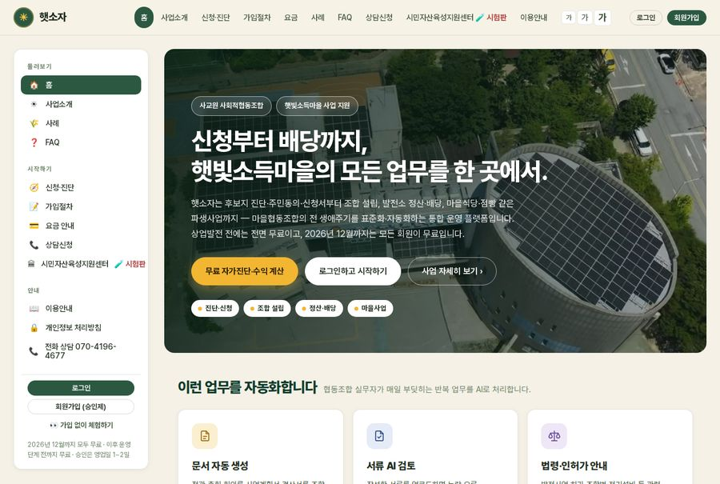
햇소자는 햇빛소득마을 사업에 참여하는 마을협동조합의 일을 한 곳에서 처리하는 운영 플랫폼입니다. 후보지 진단과 신청서부터 조합 설립, 발전소 정산·배분, 회계·세무, 마을 파생사업까지 이어집니다.
로그인하면 이런 일을 합니다.
- 묻기 — 조합 운영·회계·총회·발전사업을 말로 물어봅니다.
- 자료 넣기 — 통장 내역·영수증·회의록·한전 정산명세 같은 자료를 올리면 어떤 자료인지 알아보고 값을 읽어 줍니다. 사람이 보고 확정해야 장부에 들어갑니다.
- 문서 만들기 — 정관·총회 회의록·사업계획서·결산 보고서 같은 문서의 초안을 우리 조합 값으로 만듭니다.
- 대장 관리 — 계약서·회의록·지출결의·거래처 대장과 업무 달력.
- 수익·배분 계획 — 예상 수익을 어림하고, 남는 돈을 어디에 쓸지 20년 배분 계획을 봅니다.
계정과 등급 — 계정 하나, 등급 다섯
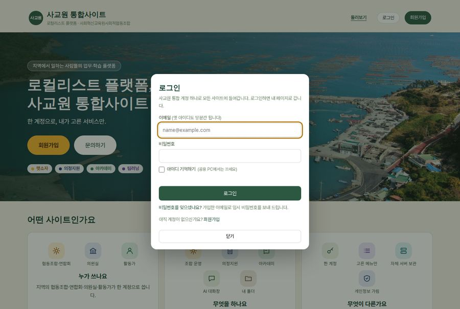
햇소자는 사교원 통합 계정 하나로 로그인합니다. 햇소자만 쓰는 계정은 따로 없습니다. 같은 계정이라도 등급에 따라 보이는 메뉴가 다릅니다.
| 등급 | 누가 쓰나요 | 로그인하면 처음 열리는 화면 |
|---|---|---|
| 🏘 협동조합회원 | 마을협동조합의 조합원·실무자 | 업무 시작 |
| 🤝 연합회원 | 햇빛소득마을 연합회 사무국·임원 | 회원조합 지원 현황판 |
| 🧑💼 컨설턴트회원 | 햇빛소득마을 신청을 돕는 컨설턴트(조합이 승인한 조합만) | 맡은 조합 |
| 🔐 관리자 | 사교원 운영진 | 관리자 대시보드 |
| 👋 손님 | 로그인하지 않은 방문자, 가입 신청 뒤 아직 승인 전인 분 | 홈 |
- 손님은 공개 메뉴만 봅니다. 회원 메뉴로 가면 「가입 승인 후 이용할 수 있는 메뉴입니다」 안내가 뜹니다.
- 연합회원은 「조합·마을 현황」을 보기만 합니다. 마을 등록·편집·삭제·담당자 배정은 관리자 몫입니다.
- 등급은 관리자만 바꿉니다. 연합회원 등급이 필요하면 사교원에 요청하세요.
회원가입
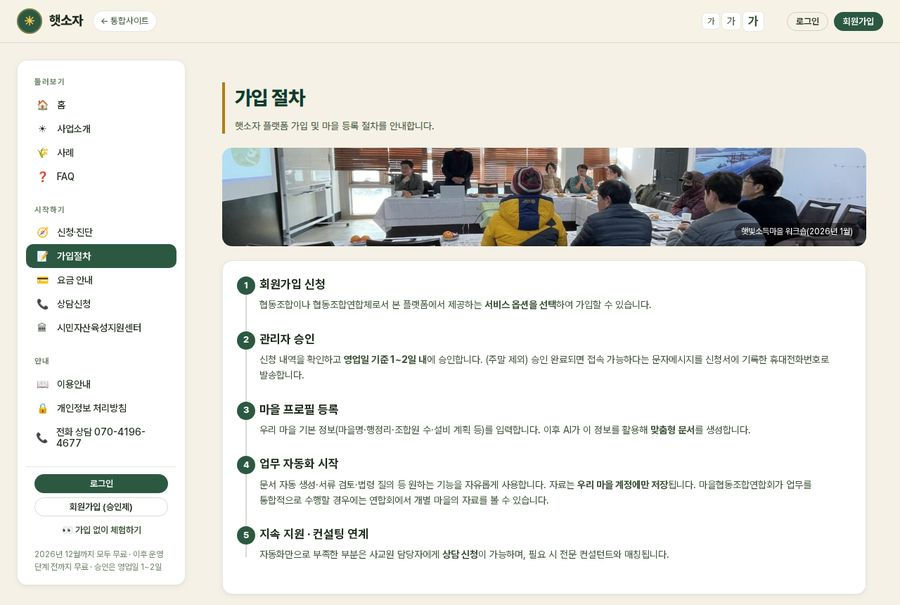
협동조합회원·연합회원은 관리자가 승인한 뒤부터 회원 메뉴를 씁니다. 무료이용회원은 바로 가입됩니다.
- 오른쪽 위 [로그인]을 누르고, 로그인 창 아래의 「가입 신청」을 누릅니다.「통합 계정 가입 신청」 칸이 펼쳐집니다.
- 아이디(이메일 주소)·비밀번호(8자 이상)·이름·활동지역을 넣습니다.전화번호는 조합·연합회 신청이면 꼭 넣습니다. 소속 마을·조직은 선택입니다.
- 회원 등급을 고릅니다 — 협동조합회원(승인 후 이용) · 연합회원(승인 후 이용) · 무료이용회원(둘러보기·AI 질문, 바로 가입).
- 개인정보 수집·이용 동의에 체크하고 [가입 신청하기]를 누릅니다.
- 승인을 기다립니다.승인 전에 로그인하면 「아직 승인 대기 중」이라는 안내가 나옵니다. 급하면 사교원 대표전화 070-4196-4677로 연락하세요.
sakyowon.co.kr/hatsoja 주소에서 합니다.로그인과 로그아웃
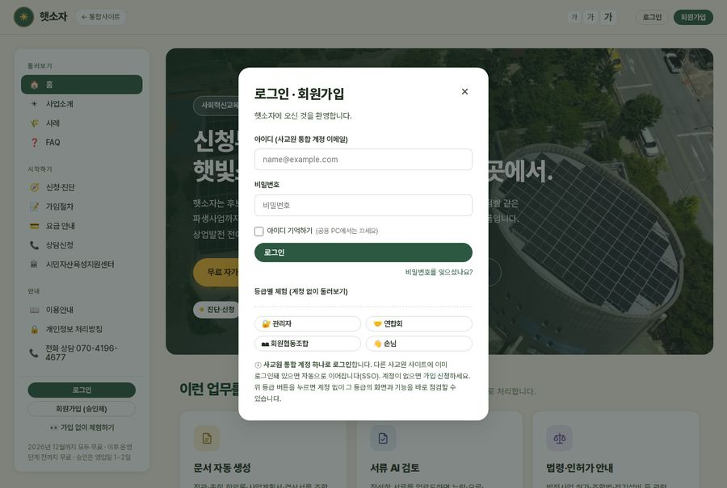
로그인
- 오른쪽 위 [로그인]을 누릅니다.
- 통합 계정의 아이디(이메일)와 비밀번호를 넣고 [로그인]을 누릅니다.
- 내 등급의 첫 화면이 열립니다.협동조합회원은 「업무 시작」, 연합회원은 「회원조합 지원 현황판」, 관리자는 「관리자 대시보드」입니다.
비밀번호를 잊었을 때
- 로그인 창의 [비밀번호를 잊으셨나요?]를 누릅니다.
- 아이디(이메일)·이름·연락처를 넣고 [초기화 요청 보내기]를 누릅니다.
- 관리자가 본인 확인을 한 뒤 가입 때 적은 연락처로 새 비밀번호를 알려 드립니다(영업일 1일 안).
가입 없이 체험하기
로그인 창 아래 「등급별 체험 (계정 없이 둘러보기)」의 단추를 누르면 계정 없이 그 등급 화면을 봅니다 — 🔐 관리자 · 🤝 연합회 · 🏘 회원협동조합 · 👋 손님.
- 체험 중에는 화면 위에 「체험 모드」 노란 띠가 붙고, 넣은 내용은 저장되지 않습니다.
- 띠의 「등급 바꿔 보기」로 로그아웃 없이 다른 등급 화면으로 갈아탈 수 있습니다.
- 실제로 시작하려면 띠의 [우리 마을로 시작하기 — 가입 신청]을 누르세요.
로그아웃
오른쪽 위 이름 옆의 [로그아웃]을 누릅니다.
공개 메뉴
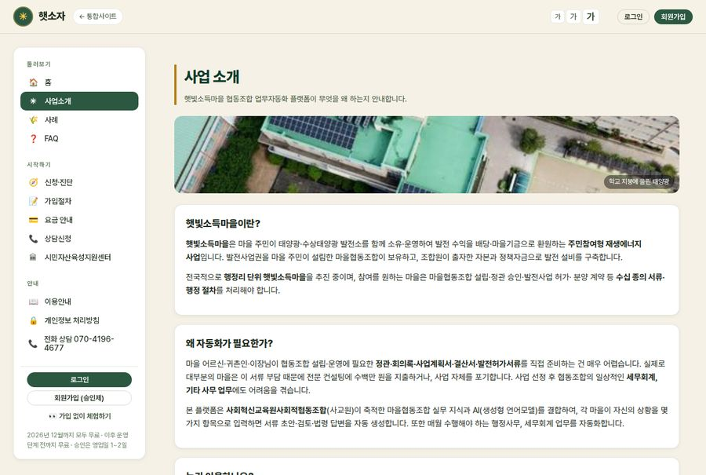
로그인하지 않아도 왼쪽 사이드 메뉴의 둘러보기 · 시작하기 묶음을 씁니다.
| 메뉴 | 무엇을 하는 곳인가요 |
|---|---|
| 🏠 홈 | 플랫폼 소개와 로그인·진단 바로가기 |
| ☀ 사업소개 | 햇빛소득마을 사업의 구조와 취지 |
| 🌾 사례 | 참여 마을들의 진행 사례 |
| ❓ FAQ | 자주 묻는 질문과 답 |
| 🧭 신청·진단 | 자가진단, 간이 수익 계산, 신청서 초안 만들기 — 아래에서 자세히 |
| 📝 가입절차 | 신청부터 이용까지의 절차 |
| 💳 요금 안내 | 기본 이용료와 고르는 메뉴 — 정본은 이용료 절 참고 |
| 📞 상담신청 | 사업 참여·조합 설립 상담을 신청하는 양식 — 아래에서 자세히 |
| 🏛 시민자산육성지원센터 | 센터 업무포털로 가는 바깥 주소(따로 로그인, 새 창) |
신청·진단 이용법
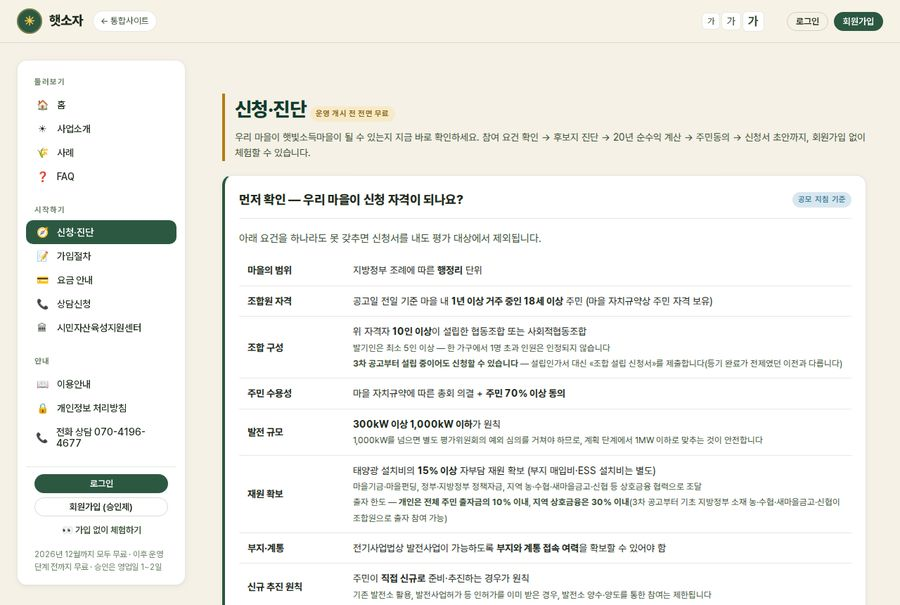
우리 마을이 사업에 맞는지 궁금할 때 먼저 써 보는 메뉴입니다. 로그인 없이 씁니다.
① 자가진단
- 사이드 메뉴에서 신청·진단을 누릅니다.
- 마을 상황 문항에 답하고 [진단하기]를 누릅니다.
- 사업 적합도와 다음에 할 일을 확인합니다.
② 간이 수익 계산
- 같은 화면에서 설비용량과 참여 가구 수를 고릅니다.
- [계산하기]를 누르면 예상 수익이 나옵니다.더 자세한 계산은 로그인한 뒤 「수익 시뮬레이션·배분 계획」에서 합니다.
③ 신청서 초안 만들기
- 마을 이름을 넣습니다. (예: ○○군 ○○면 ○○리)
- [신청서 초안 만들기]를 누르면 사업 신청서 초안이 만들어집니다.
상담 신청하기
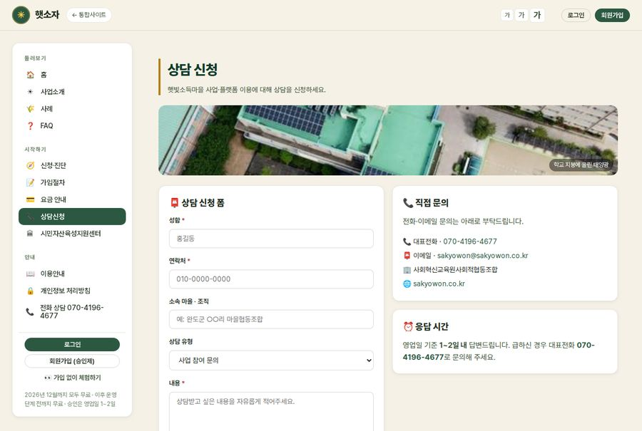
- 사이드 메뉴에서 상담신청을 누릅니다.
- 성함·연락처(필수)와 소속, 상담 유형, 내용을 적습니다.
- 개인정보 동의에 체크하고 [상담 신청하기]를 누릅니다.접수되면 회신 시한(영업일 1~2일)과 회신받을 연락처가 확인 창에 나옵니다.
메뉴 한눈에 보기
협동조합회원으로 로그인하면 사이드바가 아래 순서로 나옵니다. 「깊이 보기」 세 묶음은 처음엔 접혀 있습니다.
| 묶음 | 메뉴 | 언제 쓰나요 |
|---|---|---|
| 현황 | 📊 현황 대시보드 | 보고 싶은 항목을 골라 우리 조합 현황을 한 화면에 |
| 📒 조합 원장(확정 값) | 모든 화면이 읽는 우리 조합 기본값을 고치고 저장할 때 | |
| ✅ 할 일 | 현황과 법령·기한 규칙이 만든 할 일 목록 | |
| 업무 | 🏠 업무 시작 | 상담·자료 입력·문서 생성 — 매일 여기서 시작 |
| 조합 대장·업무 | 📆 업무 달력 | 월·분기·반기·연마다 할 일 |
| 📑 계약서 대장 | 조합이 맺은 계약과 만기 | |
| 🗂 회의록 대장 | 총회·이사회·마을총회 회의록. 녹음으로 초안 만들기 | |
| 🧾 지출결의 | 영수증을 넣어 지출결의서 만들기·대조 | |
| 📒 거래처·표준장부 | 거래처별 표준 계정과 표준 관리대장 | |
| 깊이 보기 · 설립·건설 | 👪 마을회·조합 설계 | 마을회와 조합의 구성·수익 나누는 방식 정하기 |
| 🏗 설립 내비게이터·청약 | 설립 단계·구좌 청약·인허가와 공정 | |
| 🧱 사업비·부품 구성 | 견적을 항목별로 뜯어 보고 부품을 바꿔 보기 | |
| 🏦 자부담·융자 신청 | 자부담 15%를 신협 융자로 조달하는 절차·서식 | |
| 🔍 사업자(ReSCO) 선정 | 설계·시공·운영 사업자를 주민이 비교해 고르기 | |
| 📄 서류 AI 검토 | 작성한 서류의 누락·오류 점검 | |
| ⚖️ 법령·인허가 | 우리 마을 조건으로 걸리는 법령 판정 | |
| 🧭 신청 과정 점검표 | 햇빛소득마을 신청 8단계를 조합·컨설턴트가 함께 챙기기 | |
| 깊이 보기 · 운영관리 | ⚡ 발전·정산·배당 | 발전량·한전 정산·배분·배당 적립 |
| 💰 수익 시뮬레이션·배분 계획 | 예상 수익, 배분 전략, 20년 배분 계획 | |
| 🧾 회계·세무 자진신고 | 조합이 직접 장부를 쓰고 신고 값을 만들기 | |
| 💸 지급·원천징수 | 급여대장 마감, 지급 유형 판별, 배당 원천징수 | |
| 🧮 잉여금 처분 계산 | 결산 잉여금을 법이 정한 순서대로 나누기 | |
| 📊 재무제표·컨설팅 | 월별 실적으로 손익계산서·재무상태표 | |
| 📁 월마감·보고서 | 매월 마감과 보고서 | |
| 👥 조합원 관리 | 조합원 명부·출자금·의결권 | |
| 📅 일정·마감 | 총회·이사회·신고 마감 일정 | |
| 🧭 20년 성공 조건 | 완공 뒤 오래 버티기 위한 점검 | |
| 깊이 보기 · 확장 | 🛍 마을비즈니스 | 발전 수익 다음의 마을 파생사업 |
| 🧮 세무 공동구매 신청 | 세무회계 비용절감 프로젝트 신청 | |
| 🤝 연합체·커뮤니티 | 다른 마을 현황·공동사업·교육 | |
| 🗺 전남 발전 현황 | 전남 태양광 공개 통계 | |
| 📚 공지·자료실 | 공지와 서식·자료 | |
| 🎬 활동 영상 만들기 | 조합 활동 영상(30초 안) | |
| 🏛 시민자산육성지원센터 | 센터 업무포털(바깥 주소) | |
| 내 조합 | 👤 내 페이지 | 내 계정과 내가 만든 문서 |
| 🧑💼 컨설턴트 연결 | 컨설턴트에게 연결 번호를 주고 요청을 승인·끊기, 고친 기록 보기 | |
| 이용안내 | 📖 사용 설명서 | 이 문서 |
| 🤖 내 AI 연결 안내 | 우리 조합이 쓰는 AI 연결과 열쇠 만들기 |
업무 시작 — 묻고, 넣고, 만든다
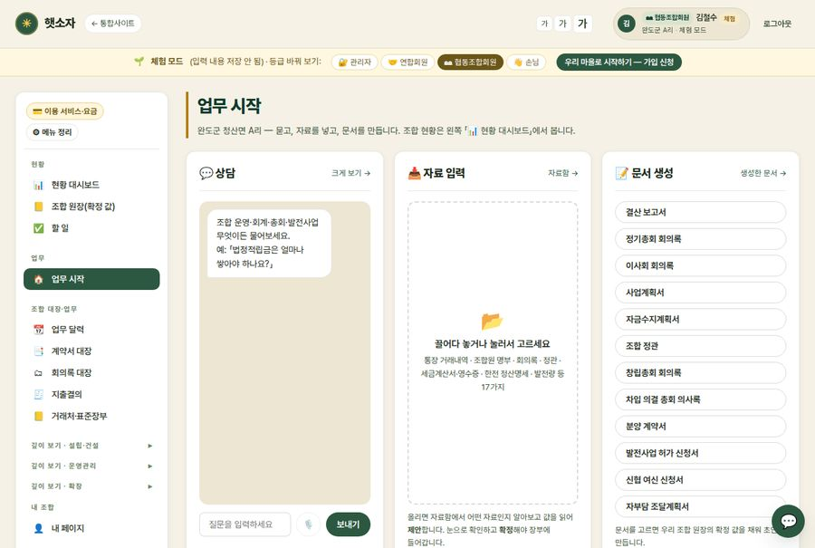
사이드바 업무 → 🏠 업무 시작 (로그인하면 처음 열리는 화면)
한 화면에 세 창이 있습니다. 조합 현황은 「📊 현황 대시보드」에서 봅니다.
💬상담
- 조합 운영·회계·총회·발전사업 무엇이든 적고 [보내기](또는 Enter)를 누릅니다.
- 🎙️ 단추를 누르고 말한 뒤 다시 누르면, 받아쓴 글이 입력 칸에 들어갑니다. 녹음은 저장하지 않습니다.
- 「크게 보기 →」를 누르면 넓은 상담 화면으로 갑니다.
📥자료 입력
- 파일을 끌어다 놓거나 눌러서 고릅니다. 통장 거래내역·조합원 명부·회의록·정관·세금계산서·영수증·한전 정산명세·발전량 등을 받습니다.
- 올리면 자료함에서 어떤 자료인지 알아보고 값을 읽어 제안합니다. 눈으로 보고 확정해야 장부·원장에 들어갑니다.
📝문서 생성
- 만들 문서 단추를 누릅니다 — 결산 보고서·정기총회 회의록·이사회 회의록·사업계획서·자금수지계획서·조합 정관·창립총회 회의록·차입 의결 총회 의사록·분양 계약서·발전사업 허가 신청서·신협 여신 신청서·자부담 조달계획서(12종).
- 우리 조합 원장의 확정 값을 채워 초안을 만듭니다. 「생성한 문서 →」에서 다시 엽니다.
현황: 대시보드 · 조합 원장 · 할 일
📊현황 대시보드
사이드바 현황 → 📊 현황 대시보드
- 맨 위 「볼 항목 고르기」에서 보고 싶은 항목에 체크합니다.할 일·다음 단계 · 조합 기본 지표 · 사업 단계 · 재무 요약 · 자료 확인 대기 · 조합원·출자금 · 다가오는 일정 · 최근 문서 · 이번 달 업무 · 계약 만기 · 내 기능(우리 AI 가 만든 칸)
- 고른 항목만 한 화면에 모여 나옵니다. 고른 것은 이 브라우저에 기억됩니다.
📒조합 원장(확정 값) — 화면 제목 「우리 조합 현황」
사이드바 현황 → 📒 조합 원장(확정 값)
모든 화면이 여기 있는 값 하나만 읽습니다. 여기서 고치면 진단·법령 판정·할 일·문서 서식이 함께 바뀝니다.
- 항목의 값을 고칩니다.「📥 자료함에서 채우기」로 올린 자료에서 값을 가져올 수도 있습니다. 「출처」 칸에 그 값이 어디서 왔는지 남습니다.
- 「💾 저장」을 누릅니다. 고친 건수가 단추에 「💾 저장 (N건)」으로 보입니다.잘못 고쳤으면 「고친 것 되돌리기」를 누릅니다.
- 저장하면 원장·현황 대시보드·진단·할 일에 반영됩니다.
화면 아래 「⚖️ 이 현황에 걸리는 법령」은 용량·소재지·지목을 채우면 나옵니다.
✅할 일
사이드바 현황 → ✅ 할 일
현황과 법령·기한 규칙이 만든 목록입니다. 지금 · 곧 · 여유로 나눠 보입니다. 목록이 비어 있으면 자료함부터 채우세요.
조합 대장·업무
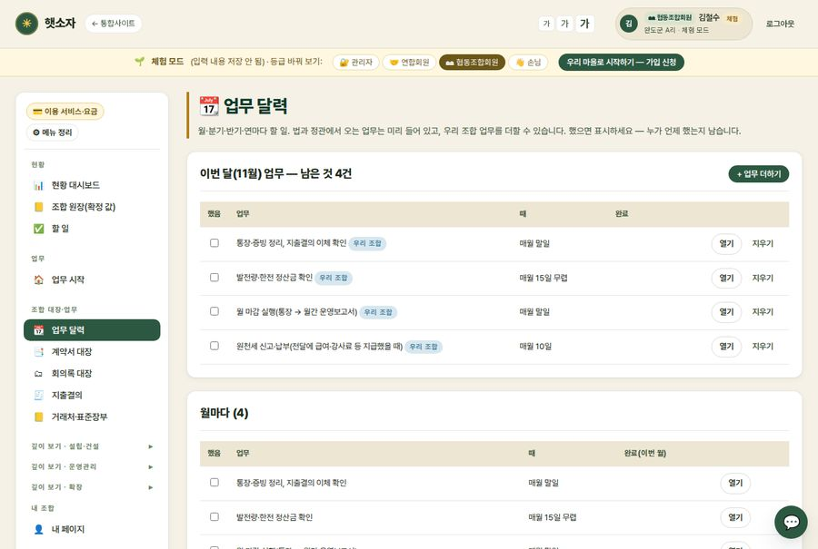
📆업무 달력
사이드바 조합 대장·업무 → 📆 업무 달력
월·분기·반기·연마다 할 일입니다. 법과 정관에서 오는 업무는 미리 들어 있고, 우리 조합 업무를 더할 수 있습니다. 했으면 체크하세요 — 누가 언제 했는지 남습니다.
📑계약서 대장
사이드바 조합 대장·업무 → 📑 계약서 대장
- 시공·부지 임대·유지관리·보험·융자 계약을 적습니다(계약명·상대방·종류·금액·시작일·종료일).
- 종료일 90일 전부터 「만기 임박」 표시가 붙고 현황·업무 달력에 뜹니다.
- 「📥 자료로 넣기」는 자료함으로 갑니다. 손으로 적으려면 「+ 직접 넣기」.
📒거래처·표준장부 — 화면 제목 「표준장부·거래처」
사이드바 조합 대장·업무 → 📒 거래처·표준장부
- 거래처 — 거래처마다 표준 계정 하나를 둡니다(예: 한전=전력판매수익). 통장 적요로 거래처를 추천합니다.
- 표준 관리대장 12종 — 연합회 표준안 양식 그대로. 다른 메뉴의 기록에서 채워집니다.
- 시설보조금 이연수익 계산기, 세제특례 점검표도 여기 있습니다.
🧾 지출결의 — 영수증만 넣으면 됩니다
사이드바 조합 대장·업무 → 🧾 지출결의
단추는 「📥 자료 넣기」 하나입니다. 영수증 한 장이 지출결의서 한 줄이 됩니다.
- 「📥 자료 넣기」를 누르고 파일을 고릅니다. 여러 장을 한꺼번에 넣어도 됩니다.영수증·카드전표·현금영수증 사진이나 PDF, 카드 사용내역 파일(.csv·.xlsx)을 받습니다.
- 자료를 읽어 지출결의서를 자동으로 만듭니다. 필수 항목이 다 읽히면 바로 들어갑니다.
- 필수 항목(지출일·거래처·금액·결제 수단·증빙 종류)이 없거나 흐리게 읽힌 것은 노란 칸으로 묻습니다. 확인해 넣고 「✅ 최종 지출」을 누릅니다.현금영수증이면 승인번호도 묻습니다. 넣지 않을 자료는 「이 자료 건너뛰기」.
- 다 넣으면 통장·카드 기록과 저절로 대조합니다. 표의 「대조」 칸에 대조·확인·미대조가 나옵니다.
- 자료 없이 적으려면 안내 글의 「자료 없이 직접 쓰기」, 대조를 다시 돌리려면 「대조 다시 하기」를 누릅니다.
- 위쪽 계정별 합계 표는 거래처가 여러 곳이어도 계정(무슨 일에 쓴 돈인가)으로 합쳐 보여 줍니다.
- 통장 내역은 「회계·세무 자진신고 → ① 장부 쓰기」에서 올립니다.
🗂 회의록 대장 — 회의 녹음으로 초안 만들기
사이드바 조합 대장·업무 → 🗂 회의록 대장
총회·이사회·마을총회 회의록을 적는 대장입니다. 「📥 자료로 넣기」에 회의 녹음을 넣으면 사교원 서버 안에서 받아써 회의록 초안을 만듭니다.
- 「📥 자료로 넣기」를 누르고 녹음 파일을 고릅니다.m4a·mp3·wav·mp4 등 소리·영상 파일, 95MB·3시간까지. 회의록 문서(PDF·한글)를 넣으면 자료함으로 갑니다.
- 회의 종류·회의일·장소·참석자를 적고 [올리고 만들기]를 누릅니다.참석자 이름을 쉼표로 적으면 받아쓴 이름이 더 정확해집니다. 1시간 녹음은 15분쯤 걸리고, 창을 닫거나 다른 화면에 가도 계속 만듭니다.
- 「회의록 초안이 준비됐습니다」가 뜨면 「검토하고 제출하기」를 누릅니다.초안에는 안건·결정·할 일·위험이 정리돼 있고, 받아쓴 글 전체도 펼쳐 볼 수 있습니다.
- 녹음과 맞는지 보고 고친 뒤 「✅ 제출」을 누르면 대장에 들어갑니다.출석/재적·서명(의장과 선출 조합원 3인)은 실제 회의록대로 고치세요(협동조합 기본법 제30조).
- 개인정보 — 녹음은 받아쓴 뒤 바로 지웁니다. 받아쓴 글과 초안은 제출하거나 버리면 지우고, 늦어도 48시간 안에 지웁니다. AI 정리에는 참석자 이름을 「참석자1」처럼 바꾼 글만 보냅니다.
- 실제 조합 계정에서만 씁니다. 체험 화면에서는 녹음으로 만들기가 되지 않습니다.
- 한 번에 하나씩 만듭니다. 만드는 중이면 끝난 뒤에 올리세요.
- 녹음 없이 적으려면 「+ 직접 넣기」를 누릅니다.
깊이 보기 · 설립·건설
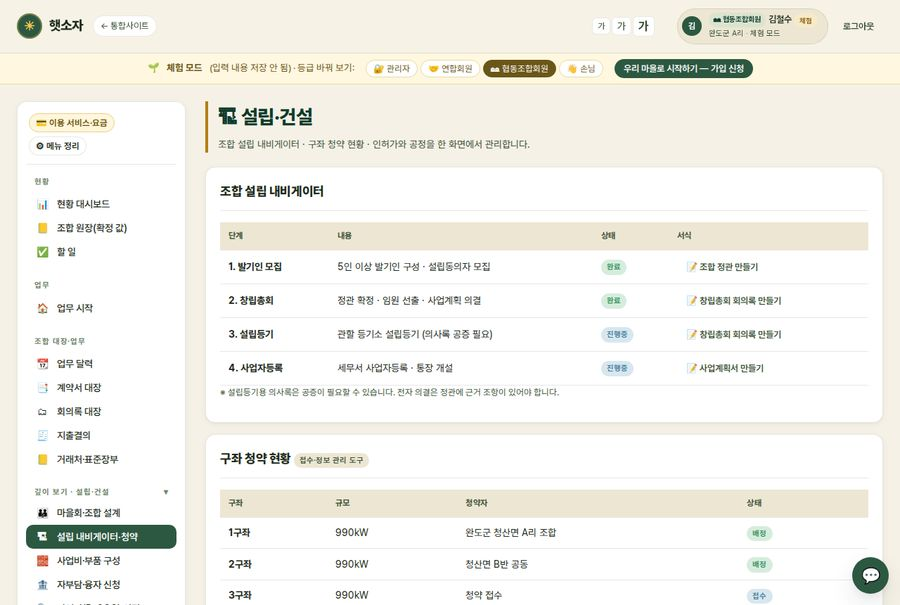
👪마을회·조합 설계
누가 마을회 구성원이고 누가 조합원인지, 수익을 어떻게 나눌지를 정합니다. 유형별 장단점을 비교해 우리 마을에 맞는 조합을 찾습니다.
🏗설립 내비게이터·청약 — 화면 제목 「설립·건설」
- 조합 설립 내비게이터 — 발기인 모집 → 창립총회 → 설립등기 → 사업자등록. 단계마다 필요한 서식으로 바로 이어집니다.
- 구좌 청약 현황 — 구좌별 배정·접수·모집 상태.
- 인허가·건설 공정 — 허가·협의·계통 연계 진행과 공정률.
🧱사업비·부품 구성
업체가 준 총액 견적을 항목별로 뜯어 보고, 주요 부품을 바꿔 가며 사업비와 발전량이 어떻게 달라지는지 봅니다.
🏦자부담·융자 신청
자부담 15%를 지역 신협 융자로 조달하는 절차와 제출 서식을 안내합니다. 실제 승인·조건은 신협이 정합니다.
🔍사업자(ReSCO) 선정
부지 발굴·설계·시공·금융·운영을 맡을 사업자를 주민이 비교하고 직접 고르는 절차를 돕습니다.
📄서류 AI 검토
- 검토받을 서류 본문을 붙여넣거나 파일을 올립니다.
- 특별히 봐 줄 부분을 요청 메모에 적습니다.
- [검토 시작]을 누르면 누락·오류·개선점이 나오고 검토 이력에 남습니다.
⚖️법령·인허가 — 화면 제목 「법령·인허가 안내」
우리 마을 조건을 넣으면 걸리는 법령이 자동으로 판정되고 조문 근거가 붙습니다. 궁금한 것은 질문 칸에 적고 [AI에 질문]을 누릅니다. 어려운 말은 [📖 용어 쉬운 말 풀이]를 누르세요.
💰 수익 시뮬레이션·배분 계획
사이드바 깊이 보기 · 운영관리 → 💰 수익 시뮬레이션·배분 계획
한 화면 위쪽의 단추 셋으로 오갑니다. 단추를 바꿔도 넣던 값은 남습니다.
| 단추 | 무엇을 하나요 |
|---|---|
| 🔮 수익 시뮬레이션 | 설비 규모·발전 조건을 넣어 예상 매출·배당·상환을 어림합니다(사업 전). |
| 🧭 배분 전략 선택 | 남는 돈을 어디에 쓸지 전략을 고릅니다. |
| 📅 우리 조합 20년 배분 계획 | 고른 전략으로 발전수익을 순위대로 나눠 20년을 버티는지 봅니다. 실적이 쌓이면 실제 발전수익으로 계산합니다. |
배분 전략의 입력 칸 — 비워 두면 이렇게 계산합니다
| 칸 | 비워 두면 |
|---|---|
| 운영비 | 매출의 14%로 어림합니다. |
| 법인세 등 | 법정 세율로 어림합니다 — 과세표준 어림(매출−운영비−원리금) 2억 이하 10%·넘는 부분 20%에 지방소득세(법인세의 10%)를 더합니다. 결산서의 법인세비용을 넣으면 그 값을 씁니다. |
| 법정적립금 | 세후 잉여의 10%(일반 협동조합 최저, 협동조합 기본법 제50조)로 계산합니다. 사회적협동조합은 30% 이상(제97조)이니 직접 넣으세요. |
깊이 보기 · 운영관리
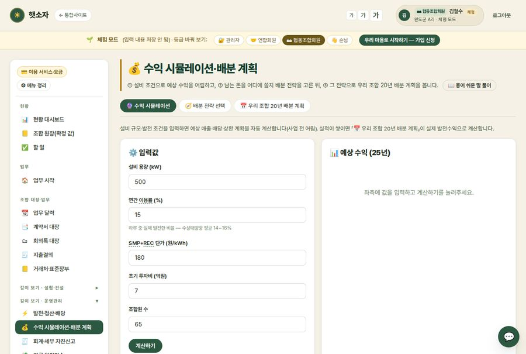
⚡발전·정산·배당
- 발전 계량 자료와 한전 정산내역을 대조합니다. 무발전·급락·이용률 미달 같은 이상은 저절로 잡아 알립니다.
- 수익 배분 — 우선순위 폭포: 이달 정산금이 순위대로 어떻게 나뉘는지 봅니다(고정 비율 없음).
- [📨 배당·햇빛소득 지급]을 누르면 「지급·원천징수」로 가서 원천징수와 통지문을 만듭니다.
🧾회계·세무 자진신고
조합이 직접 장부를 쓰고(자기 기장) 신고 값을 만들어, 대표가 승인한 뒤 조합 담당자가 홈택스·위택스·4대보험 정보연계센터에 직접 제출합니다. 사교원은 계산·기록 도구만 드리고 신고를 대신하지 않습니다.
| 단추 | 하는 일 |
|---|---|
| 📒 ① 장부 쓰기 · 통장 · 증빙 | 은행 CSV를 그대로 올립니다(적요는 잠겨 못 고침). 거래처는 추천 뒤 사람이 확정, 현금 인출은 사유 필수. 증빙 보관함은 5년 보존. |
| 🗓️ ② 신고하기 (세금·4대보험) | 원천세·부가세·법인세와 직원 4대보험 신고를 기한 순서로 챙깁니다. ①에서 「📤 세금 신고 일로 보내기」를 누르면 장부 값이 넘어옵니다. |
| 👤 담당자 · 세무사에게 맡길 때(선택) | 세무 담당자·연락처를 적고, 세무사에게 맡기는 조합은 여기서 자료를 묶어 보냅니다. |
💸지급·원천징수
- 급여대장 — 직원을 등록하면 4대보험·소득세(근사치)·실지급액을 계산합니다. 매월 5일까지 마감합니다.
- 지급 유형 판별 — 돈을 내보내기 전에 받는 사람과 금액을 넣으면 소득 구분·원천징수율·필요 서류가 나옵니다.
- 햇빛소득 지급 — 총회 의결일·배당 재원을 넣으면 조합원(배당소득)·비조합원 주민(기타소득)의 원천징수와 통지문을 만듭니다.
🧮잉여금 처분 계산
결산 잉여금을 법이 정한 순서(손실 보전 → 법정적립금 → 정관 적립 → 임의적립금 → 배당 → 이월)로 나누고 법정 한도를 점검합니다. 숫자는 이 화면 안에서만 계산하고 저장하지 않습니다.
📊재무제표·컨설팅
올린 월별 실적과 기초값으로 손익계산서·재무상태표를 만듭니다. 금액은 서버가 계산합니다.
📁월마감·보고서
「▶ 월 마감 실행」으로 매월 마감을 하고, 만든 월마감 보고서를 모아 봅니다. 수집·계산·대조·초안은 자동으로, 이체 실행·제출·의결은 사람이 합니다.
👥조합원 관리 — 화면 제목 「조합원 관리」
조합원 명부·출자금·의결권을 관리합니다. [+ 조합원 추가]로 등록합니다.
📅일정·마감 — 화면 제목 「일정·마감 관리」
총회·이사회·신고 마감 같은 일정을 봅니다. [+ 일정 추가]로 더합니다.
🧭20년 성공 조건
완공 뒤에도 이어지는 대출 상환·설비 관리·수익 사용 결정을 점검합니다.
깊이 보기 · 확장
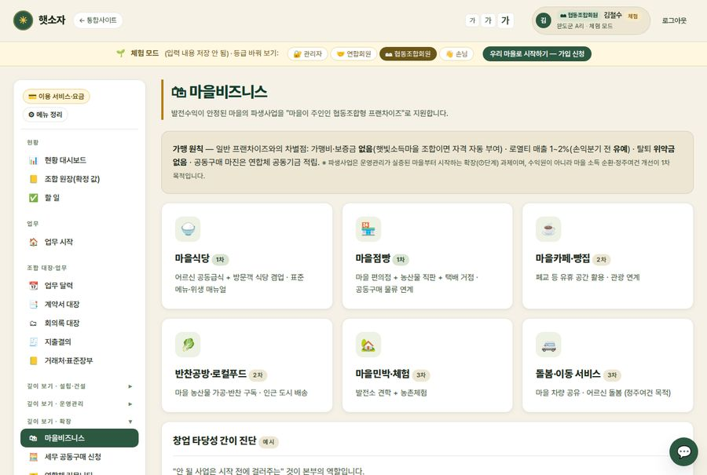
- 🛍 마을비즈니스 — 발전수익이 안정된 마을의 파생사업(마을식당·점빵 등)을 살펴보고 창업 타당성을 간이 진단합니다.
- 🧮 세무 공동구매 신청 — 화면 제목 「세무회계 비용절감 프로젝트 신청」. 연합회가 세무사 사무소와 상의한 표준 단가를 알리고, 계약과 비용 지급은 조합이 세무사 사무소와 직접 합니다. 사교원·연합회는 소개·연결 대가를 받지 않습니다.
- 🤝 연합체·커뮤니티 — 다른 마을 현황, 공동사업, 교육·연수 신청.
- 🗺 전남 발전 현황 — 전남 태양광의 전국 위치·월별 흐름·이용률·시군별 설비를 공개 통계로 봅니다.
- 📚 공지·자료실 — 사교원 공지와 서식·참고 자료.
- 🎬 활동 영상 만들기 — 누구를 위한 영상인지 적으면 스토리보드가 나오고, 사진·자막·음악을 넣어 30초 안의 영상을 만듭니다.
- 🏛 시민자산육성지원센터 — 센터 업무포털(따로 로그인, 새 창).
내 페이지 · 사용 설명서 · 내 AI 연결 안내
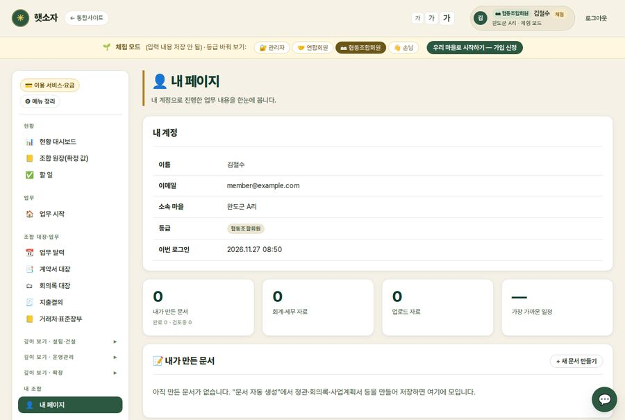
👤내 페이지
사이드바 내 조합 → 👤 내 페이지
내 계정, 내가 만든 문서, 다른 업무 바로가기가 있습니다.
📖사용 설명서
사이드바 이용안내 → 📖 사용 설명서 (이 문서)
🤖내 AI 연결 안내
사이드바 이용안내 → 🤖 내 AI 연결 안내
우리 조합이 쓰는 AI를 햇소자에 연결해, 우리 조합만의 칸·업무·대장을 AI와 함께 키웁니다. 사이트 기본 기능은 바뀌지 않습니다.
- 🔑 열쇠 칸에서 열쇠 이름을 적고, 할 수 있는 일(읽기 · 대장·업무 더하기·제안 · 내 기능 만들기)을 고른 뒤 [열쇠 만들기]를 누릅니다.새 열쇠는 그때 한 번만 보입니다. 바로 [복사]해 두세요. 조합마다 5개까지 만들고, 안 쓰면 [지우기]로 끊습니다.
- AI 프로그램의 「연결(커넥터·MCP 서버) 추가」에 화면에 적힌 주소와 열쇠를 넣습니다.
- AI에게 말로 시킵니다. 예: 「계약서 대장 보고 6개월 안에 끝나는 것 알려 줘」.
- AI는 원장에 값을 「제안」만 하고, 확정은 사람이 합니다. 다른 조합 자료와 조합원 명부(개인정보)는 볼 수 없습니다.
- AI가 한 일은 「📜 AI 가 한 일」에 최근 50건이 남습니다. AI가 만든 칸은 「🧩 내 기능」에서 끄거나 지웁니다.
- 연결한 AI 회사로 우리 조합 자료가 넘어가므로 개인정보는 넣지 마세요.
- 체험 화면에서는 열쇠를 만들 수 없습니다.
컨설턴트 회원 · 조합 연결
컨설턴트 회원은 조합이 승인한 협동조합에 들어가 그 조합 회원과 같은 권한으로 신청 과정을 돕습니다. 맡은 조합이 몇 곳이든 이용료는 같습니다(월 25,000원, 부가세 별도 · 20곳까지).
조합과 잇는 순서
- 조합이 「내 조합 › 🧑💼 컨설턴트 연결」에서 「새 연결 번호 만들기」를 누르고, 나온 8자리 번호를 컨설턴트에게 직접 건넵니다(7일 동안 한 번만 씀).
- 컨설턴트가 「🧑💼 맡은 조합」에서 번호를 넣고 「연결 요청」을 누릅니다.
- 조합이 같은 화면에서 요청한 컨설턴트의 이름·아이디·소속을 보고 「승인」 또는 「거절」을 누릅니다. 승인과 끊기는 그 조합의 조합 회원 본인 계정으로만 할 수 있습니다.
- 조합은 언제든 「연결 끊기」를 누를 수 있고, 누르면 컨설턴트는 바로 못 들어옵니다. 컨설턴트도 「그만 맡기」로 끊을 수 있습니다.
컨설턴트가 쓰는 화면
- 🧑💼 맡은 조합 — 맡은 조합마다 진행 단계·점검표 진척·다음 일정이 카드로 나옵니다. 「들어가기」를 누르면 그 조합의 화면(업무 시작·대장·서류·일정 등)이 열리고, 위쪽 띠에 「○○ 조합 화면(컨설턴트)」이 뜹니다. 띠의 목록에서 다른 조합으로 바로 바꾸고, 「컨설턴트 화면으로」를 눌러 돌아옵니다.
- 🧭 신청 과정 점검표 — 사전 진단 → 주민 합의 → 조합 설립 → 계통·부지 → 사업비·재원 → 사업자 선정 → 신청 서류 → 제출·선정 뒤, 8단계 항목에 「됨」을 표시하고 메모를 적습니다. 단계마다 그 일을 하는 화면으로 가는 단추가 있습니다. 공모마다 다른 숫자(마감일·비율)는 공고문으로 확인하세요.
- 🤖 내 AI 연결 — 내 AI(클로드 등 MCP 를 쓰는 AI)에 열쇠를 넣으면 맡은 조합들의 자료를 그 AI 에서 읽고, 허락한 경우 대장·업무 달력에 씁니다. 조합원 명부는 AI 로 보내지 않습니다. 이용권에서 「내 AI 연결」을 고르면 기본요금이 20% 깎이고(월 20,000원), 그때 사이트 AI 는 하루 10번까지 씁니다.
조합이 알아 둘 것
- 승인한 컨설턴트는 조합원 명부와 업무 자료를 보고 고칠 수 있습니다. 이용권·결제, 세금·4대보험 신고, 컨설턴트 승인, 조합 AI 열쇠와 그 사용 기록, 공개 현황판은 건드릴 수 없습니다(세금 신고는 조합이 직접 합니다).
- 컨설턴트가 자료를 고치면 「컨설턴트 연결」 화면의 「컨설턴트가 고친 기록」에 시각과 화면이 남습니다(1년 보관).
- 「🧭 신청 과정 점검표」(깊이 보기 · 설립·건설)는 조합도 함께 보고 고칩니다.
연합회원 메뉴
연합회 메뉴는 두 갈래입니다. 회원조합을 돕는 일과 연합회 자신의 살림을 나눠, 회원 돈과 연합회 돈이 한 화면에 섞이지 않게 했습니다.
| 묶음 | 메뉴 |
|---|---|
| ① 협동조합 회원 지원업무 | 🤝 회원조합 지원 현황판 · 📮 지원요청 처리 · 🏘 조합·마을 현황(보기만) · 🏆 공모·심사 지원 · 📄 서류 검토 대행 · ⚖️ 법령·인허가 안내 · 📝 문서 작성 지원 · 📈 세무 파일럿 KPI · 🗓️ 회원조합 신고 현황 · 📚 공지·자료 배포 · 🏛 시민자산육성지원센터 |
| ② 연합회 자체 사무 | 🏢 사무국 운영(총회·이사회) · 💳 회비 부과·수납 · 🧺 공동사업 · 📒 연합회 회계·결산 · 📊 재무제표·컨설팅 |
| 소통 | 🗺 전남 발전 현황 · 💬 AI 상담 · 🎬 활동 영상 만들기 · 👤 내 페이지 |
- 회원조합 지원 현황판 — 회원조합이 올린 월 실적을 읽고, 먼저 도와야 할 곳을 찾습니다(로그인하면 처음 열리는 화면).
- 지원요청 처리 — 회원조합이 올린 지원요청을 맡아 처리하고 회신합니다.
- 회비 부과·수납 — 회원조합 정산금을 기준으로 회비를 매기고 수납을 기록합니다.
관리자 화면 한눈에 보기
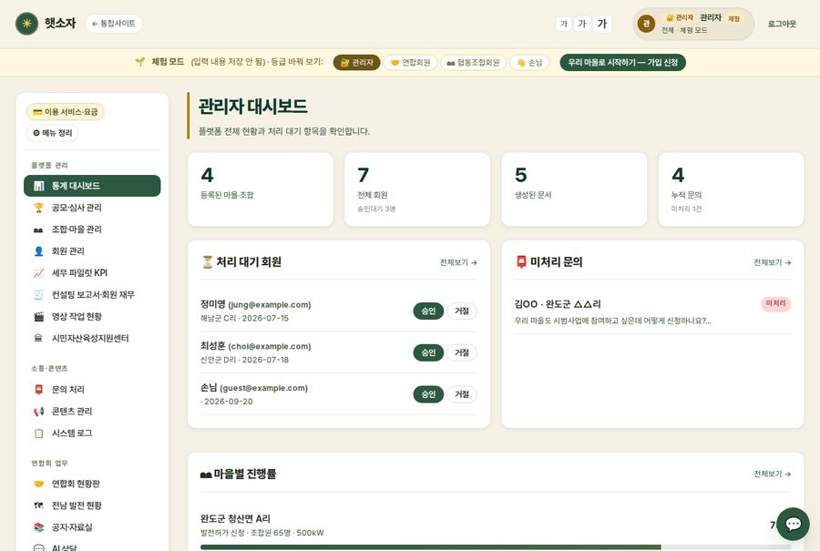
관리자로 로그인하면 관리자 사이드바가 나옵니다.
| 묶음 | 메뉴 |
|---|---|
| 플랫폼 관리 | 📊 통계 대시보드 · 🏆 공모·심사 관리 · 🏘 조합·마을 관리 · 👤 회원 관리 · 📈 세무 파일럿 KPI · 🧾 컨설팅 보고서·회원 재무 · 🎬 영상 작업 현황 · 🏛 시민자산육성지원센터 |
| 소통·콘텐츠 | 📮 문의 처리 · 📢 콘텐츠 관리 · 📋 시스템 로그 |
| 연합회 업무 | 🤝 연합회 현황판 · 🗺 전남 발전 현황 · 📚 공지·자료실 · 💬 AI 상담 · 🎬 활동 영상 만들기 |
| 실험실 | 🧪 상담 체인 실험실(관리자가 먼저 써 보는 시험판) |
회원 승인
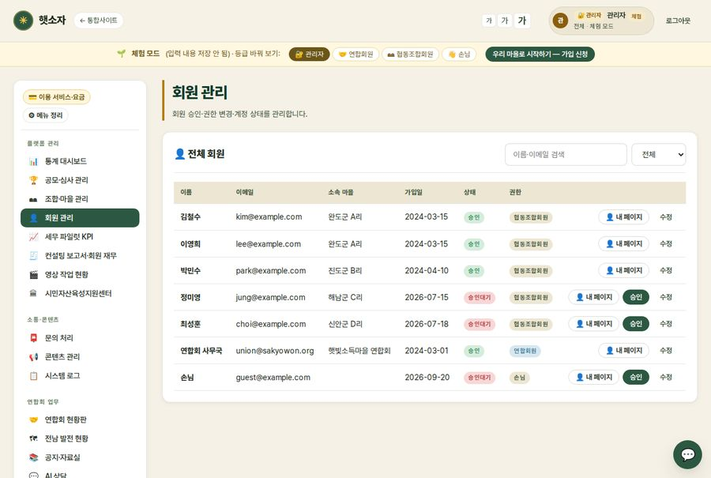
협동조합회원·연합회원 신청은 승인해야 회원 메뉴가 열립니다. 승인 목표는 영업일 1~2일입니다.
- 관리자 대시보드의 「⏳ 처리 대기 회원」에서 신청자를 확인합니다.전체 목록은 「회원 관리」에서 승인대기 상태로 봅니다.
- 실제 마을·연합회 관계자가 맞는지 확인하고 [승인]을 누릅니다. 아니면 [거절]을 누르고 사유를 고릅니다.사유(마을 관계자 확인 불가 등)는 기록에 남고 신청자 안내에 쓰입니다.
- 승인하면 신청자가 바로 회원 메뉴를 씁니다. 처리 내역은 시스템 로그에 남습니다.
이용료
요금의 정본은 통합사이트 이용권 화면(sakyowon.co.kr → 「서비스 이용 신청」)입니다. 아래는 2026-11-27 개편 기준 요약입니다.
- 2026년 12월까지 무료 시범입니다. 요금은 2027년 1월부터 받습니다.
- 서비스 이용 신청은 지금 받습니다(협동조합·연합회·컨설턴트는 사교원 승인 뒤 열림).
- 상업발전 전에는 무료입니다. 협동조합은 상업운전을 시작한 다음 달부터 요금을 냅니다.
- 요금은 월 단위이고 아래 값은 부가세 별도입니다. 1년치를 한 번에 내면 10개월 값입니다.
| 구분 | 기본 월 이용료(부가세 별도) | 부가세 포함 |
|---|---|---|
| 협동조합회원 | 20,000원 | 22,000원 |
| 연합회원 — 단위조합 5곳 이내 | 45,000원 | 49,500원 |
| 연합회원 — 단위조합 10곳 이내 | 90,000원 | 99,000원 |
| 연합회원 — 단위조합 20곳 이내 | 135,000원 | 148,500원 |
| 컨설턴트회원(맡은 조합 수와 관계없이) | 25,000원 | 27,500원 |
| 컨설턴트회원 + 내 AI 연결(20% 할인) | 20,000원 | 22,000원 |
AI 상담·법령 안내, 문서 자동 생성, 서류 AI 검토(협동조합은 세금·4대보험 신고까지)는 기본 이용료에 들어 있습니다. 추가요금은 🎬 활동 영상 만들기 하나이고, 관리하는 조합 수로 정해집니다: 5곳 이내 월 10,000원 · 10곳 이내 20,000원 · 20곳 이내 30,000원(부가세 별도). 협동조합은 1곳이라 10,000원입니다.
체험 모드와 실데이터 모드
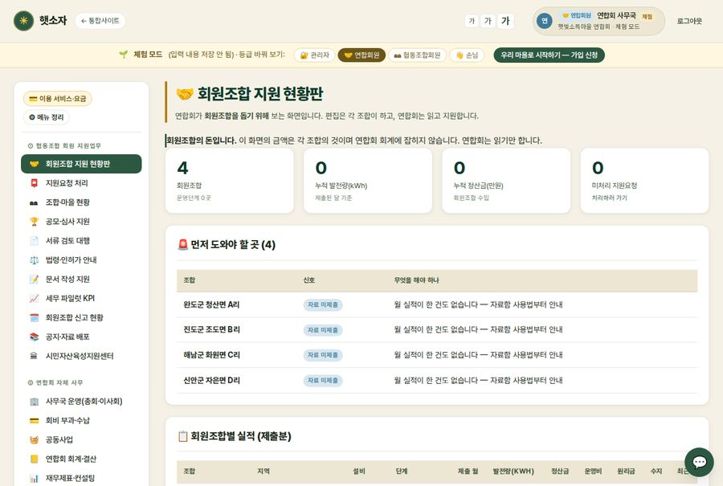
| 구분 | 체험 모드 | 실데이터 모드 |
|---|---|---|
| 들어가는 방법 | 로그인 창의 등급별 체험 단추 | 통합 계정으로 로그인 |
| 보이는 자료 | 예시 마을·예시 문서 | 우리 조합 자료 |
| 저장 | 서버에 저장되지 않음 | 조합 자료 서버에 저장 |
| 못 하는 것 | 회의 녹음으로 회의록 만들기, AI 연결 열쇠 만들기 | — |
아직 소속 마을이 배정되지 않았으면 현황 대시보드 위에 안내가 뜨고 예시 수치가 보입니다. 관리자가 마을을 배정하면 우리 마을 값으로 바뀝니다.
편하게 쓰는 기능
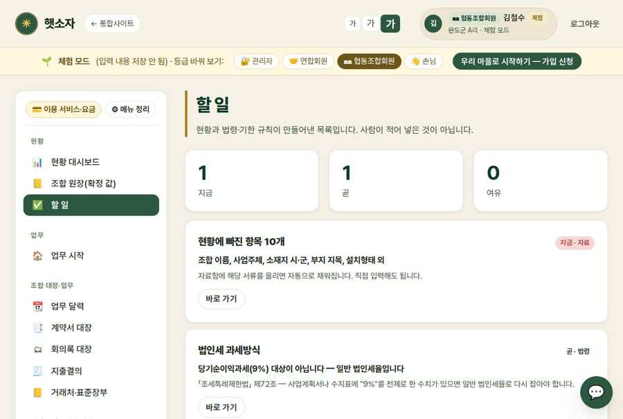
- 글자 크게 보기 — 화면 맨 위 [가 가 가] 단추로 글자를 3단계로 키웁니다.
- 💬 둥근 단추 — 어느 화면에서든 오른쪽 아래 단추로 AI 상담을 엽니다.
- 음성 입력 — 업무 시작 상담 창의 🎙️ 단추로 말로 질문합니다.
- 전화 상담 — 휴대전화로 보면 왼쪽 아래 [📞 전화 상담]이 늘 떠 있습니다.
- ⚙ 메뉴 정리 — 안 쓰는 메뉴를 사이드바에서 감춥니다.
- 홈 화면에 추가 — 안내 띠의 [홈 화면에 추가]를 누르면 휴대전화 홈 화면 아이콘으로 바로 엽니다.
- 📖 용어 쉬운 말 풀이 — 수익 시뮬레이션·법령 화면의 단추로 SMP·REC·이용률 같은 말을 쉽게 봅니다.
문제 해결 — 이런 안내가 나올 때
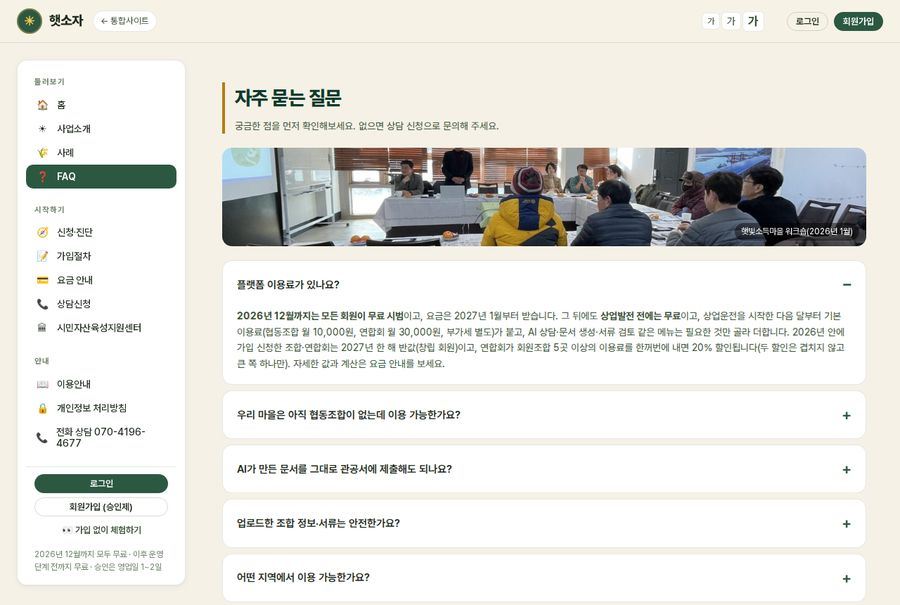
| 화면의 안내 | 원인과 해결 |
|---|---|
| 「아이디 또는 비밀번호가 올바르지 않습니다.」 | 입력을 다시 확인하세요. 한/영 전환과 대소문자도 보세요. |
| 「가입 승인 대기 중」 | 아직 승인 전입니다. 영업일 1~2일 안에 승인됩니다. |
| 「로그인 시도가 잠시 제한되었습니다.」 | 여러 번 틀려 잠시 잠겼습니다. 남은 초가 0이 되면 다시 하세요. |
| 「통합 계정 서버에 연결하지 못했습니다.」 | 잠시 뒤 다시 하세요. 그동안은 체험으로 화면을 볼 수 있습니다. |
| 「○○ 등급에서는 이용할 수 없는 메뉴입니다.」 | 내 등급에 없는 메뉴입니다. 내 등급 첫 화면으로 돌아옵니다. |
| 「가입 승인 후 이용할 수 있는 메뉴입니다.」 | 손님(승인 전)으로 회원 메뉴에 들어간 경우입니다. 승인이 나면 다시 로그인하세요. |
| 「관리자만 할 수 있는 작업입니다. 연합회 등급은 열람만 가능합니다.」 | 연합회원이 마을 등록·편집을 하려 한 경우입니다. 사교원 관리자에게 요청하세요. |
| 「원장에 저장하지 않은 고침이 N건 있습니다. 저장할까요?」 | 조합 원장에서 고치고 저장하지 않은 채 떠나려 한 경우입니다. 「확인」은 저장, 「취소」는 고친 것을 버립니다. |
| 「녹음으로 회의록 만들기는 실제 조합 계정으로 로그인했을 때 쓸 수 있습니다」 | 체험 화면에서는 안 됩니다. 조합 계정으로 로그인하세요. |
| 「녹음 파일은 95MB 까지 받습니다.」 | 녹음을 나눠 올리거나 m4a로 줄여 올리세요. |
그래도 안 될 때
- 공개 메뉴의 상담신청으로 문의를 남기시면 회신합니다.
- 전화 070-4196-4677, 070-4196-4678 / 이메일 sakyowon@sakyowon.co.kr